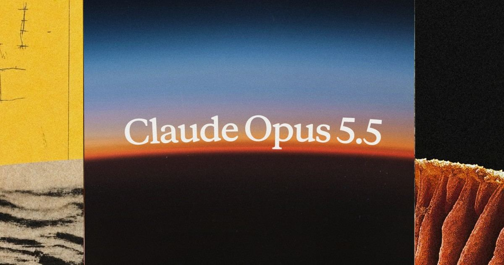
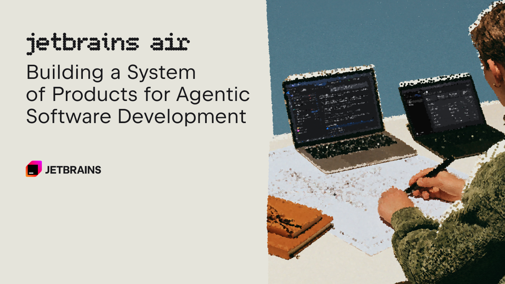

AI Intelligence Daily · 2026-09-23
0.7.1、ZCode 3.14.3、MiniMax Code 0.5.2；过夜国内补 Step Code v0.1.0（MIT 开源 CLI）。Cursor 仍 Sep10；Muse connectors 仍 404；Step 5 仍 Preview。
专栏一｜新闻
1. Anthropic 发布 Claude Opus 5.5（Claude 5.5 家族首发）
事实
Anthropic 发布 Introducing Claude Opus 5.5：Claude 5.5 家族首发；官方称多数工作对标 Claude Fable 5.1，相对 Opus 5 典型负载约 40% 更便宜，输出速度文案 >30% faster。API id：claude-opus-5-5。定价（per 1M）：Input $4、Output $20（较 Opus 5 的 $5/$25 低 20%）；Cache reads $0.20（较 $0.50 低 60%）；文案提及 1M context。可用性：Claude 产品线 + AWS / Google Cloud / Microsoft Azure。同日集成：Claude Code v2.1.280（默认 Opus=5.5）、Bedrock、Foundry、Copilot、Cursor、OpenRouter、Perplexity、JetBrains Air/Junie。@AnthropicAI 主帖 like 13483 / impression ~706k；HN 约 1145–1147 points。
判断
一线厂把新旗舰家族首模与当日多云 / IDE / coding harness 可用绑在同一发布窗——对 Work·Agent 引擎的默认 frontier 路由与成本曲线同时撞击。Fable 5.1 级对标与价绩属官方口径，以可调用 API 与自有回归为准。

2. OpenAI 发布 GPT-6 Sol & Luna（Astra 能力下沉）
事实
OpenAI 发布 Introducing GPT-6 Sol and Luna：在 GPT-6 Astra（月初已发，不另开 NEW）之下扩展 Sol（均衡/专业与 agentic）与 Luna（轻量低成本）。API：gpt-6-sol / gpt-6-luna。定价：Sol $2 / $10（自 GPT-5.6 Sol $4/$20，50% cheaper）；Luna $0.10 / $0.50（自 $0.20/$1.20，50% cheaper）。可用性：ChatGPT Work and Codex 今日起对 Plus/Pro/Business/Enterprise/Edu；Free/Go 可在 desktop 用 Luna；尚未进 Chat。配套 Better prompt caching（缓存读最高约 90% 折扣）并入本条。同日集成：Bedrock、Foundry、Copilot、OpenRouter、Perplexity、JetBrains Air/Junie。@OpenAI 主帖 like 41324 / impression ~4.66M；HN 约 1105–1107 points。
判断
同日双档位量产模型 + 半价 + Work/Codex 默认可达，直接改写 Agent Loop 的成本结构。本条是把 Astra-class 能力推到更便宜、更高用量档，不是又一次「只发旗舰」。
Sol & Luna · Prompt caching · @OpenAI · HN
3. 月之暗面 Kimi Browser Extension：侧栏 + Skill + 多 Agent CDP
事实
月之暗面官宣 Kimi Browser Extension（原 WebBridge）：工具栏侧栏登录后可对话驱动当前页导航、填表与操作；重复流程可录制步骤并保存为 Skill。第二条路径：本地 Agent（Kimi Work/Desktop、Claude Code、Codex、Cursor、Kimi Code、Hermes Claw 等）经 Chrome DevTools Protocol（CDP） 遥控本机浏览器；登录态与页面内容留在本机。Chrome Web Store 2.0.17（Updated Sep 21）。@Kimi_Moonshot like 736 / impression 44185。Kimi Desktop changelog 仍置顶 1.0.2（09-19）。
判断
把 Browser Computer Use、Skill 产物化、跨 Harness 共用同一浏览器执行面绑在同一官方 shipping——对 Desktop/Work Agent 与智能体互联网的「共享执行面」同时撞击。
4. JetBrains Air / ACP：IDE Agent + Teams + Governance
事实
JetBrains 发布 Introducing JetBrains Air：将既有 agentic 工作收束为 Air 体系——Air in JetBrains IDEs（IDE 内编排/核验）、Air Teams（开发者与自治 agents 协作）、Air Governance（原 Central 更名：策略、可见性、审计、成本与问责）。经 Agent Client Protocol（ACP） 连接 IDE 与完整 harness，经 ACP Registry 发现/运行兼容 agents；自有 coding agent Junie 跨 Air 表面支持。主叙事是体系化品牌与多表面系统，非全新桌面端首次 GA。overnight 官方 X 宣布 Claude Opus 5.5 与 GPT-6 Sol 可用于 Air and Junie → UPDATE。CEO @kskrygan like 372 / impression 159736；HN 约 66 points。
判断
一线 IDE 厂商把 ACP + Registry + 跨厂商治理写进战略正文，是协议/发现层被产业认领的强信号；overnight 双旗舰上架说明 Air 已是即时可用的多模型 harness 面。

官方 Blog · @kskrygan · @jetbrains · HN
5. 阶跃 Step Code v0.1.0：MIT 开源 Coding Agent CLI
事实
@StepFun_ai 发布 Step Code v0.1.0：终端 Coding Agent CLI，MIT 开源；宣称覆盖读改代码→跑测→交付；支持 MCP / Agent Skills / 多 Agent / /goal 长程委托 / 内置 StepPage 静态站发布。GitHub stepfun-ai/Step-Code ★293；CDN latest.json 钉 version=0.1.0。官方 X like 330 / impression 18788。平台 Step 5 仍 Preview（正式日盯 Oct 15）——本条是 CLI 开源，非 Step 5 GA。
判断
国内又一条开源 coding CLI 进入与 MiniMax Code / Kimi Code / Claude Code 同赛道；MIT + MCP/Skills/多 Agent 叙事对 Harness 对照有即时价值。v0.1.0 早期，需验证可复现性。
@StepFun_ai · GitHub · 文档 · CDN latest.json
6. 华为小艺 Work 0.7.1：文件·云空间 + 多端全局记忆同步
事实
小艺 Work 官方 Win 清单由 0.7.0 升至 0.7.1（forceUpdate: optional）。更新说明：重磅上线 [文件·云空间]（任务产物收纳/上传/引用发起任务）；多端全局记忆同步；接入 DeepSeek V4.1 Flash（模型本身约 09-10 已发，本条是小艺侧接入）；任务完成后 AI 点数实时呈现。安装包 xiaoyiWork-Setup-0.7.1.exe。
判断
云端产物持久化 + 跨端 Memory 同步，是 Work Agent 从「单机会话交付」走向「可引用的持久 Workspace / 长期状态」的实质一步。
7. 智谱 ZCode Desktop 3.14.3：运行中工作流可调并发
事实
ZCode changelog 置顶 3.14.3：运行中工作流可直接调整并发上限而无需停止任务；优化复用/大型工作流状态/脚本提交 token；修复崩溃与上下文占用等。相对昨日日报钉 3.14.1 为实质 runtime 增量。开源/第三方审计仍无公开闭环。
判断
一线厂 Coding/Desktop Agent 在「动态多 Agent 工作流」上的 runtime 增量——不停机调并发与上下文预算，对 Harness 有即时对照价值。
8. MiniMax Code CLI 0.5.2：主题面板 + 子 Agent 进度
事实
@minimax-ai/code / GH MiniMax-AI/minimax-code 升至 v0.5.2（昨日钉 0.5.1）。包内 changelog：/theme 主题面板；session send 准入/排队/steer；后台 task 默认；子 Agent 进度与角色分流；多项终端修复。官方 Agent 下载页静态资源仍含 0.1.188，未见 Desktop 升版。官方 X 对本窗 0.5.2 静默（以 GH+npm 为一手）。仓 ★1764（昨 ★1693，≈+71）。
判断
watchlist 点名的 CLI 功能档落地；勿夸大成 Desktop shipping。
GH Release · npm · Desktop 下载页
专栏二｜话题热议
1. Claude Opus 5.5 强热（官方 X + HN + Cursor/OpenRouter）
官方 X like 13483 / ~706k impressions；Cursor 接入帖 like 3489；OpenRouter like 237；HN 约 1145–1147 points / ~784 comments。时序落在 23:25 闪讯之后 → overnight S。热度与产品 shipping 同窗，非纯情绪噪音。
2. GPT-6 Sol & Luna 强热
官方主帖 like 41324 / ~4.66M impressions / quote 2360；HN 约 1105–1107 points / ~574 comments。半价 + Work/Codex 可达驱动社区密度；Astra「Earlier this month」勿再写成今日首发。
3. JetBrains Air / ACP 社区共振
CEO 帖 impression 159736 / like 372；HN 约 66 points / 104 comments；OSS 旁证 agentclientprotocol ★4303。IDE↔Agent 协议面讨论真实，勿写成「Air 桌面端今日首发」。
4. Kimi Browser Extension · Step Code · 近失脚注
Kimi Extension：like 736 / 44185；HN「Kimi Browser」窗内 0 帖（弱国际共振）。Step Code：like 330 / ★293，开源 CLI 初发热度中等。Meta Muse filesystem/0-day 社区讨论（HN ~289p / ~112p）无 Meta 官方安全稿、connectors 仍 404 → 仅作 Trust 脚注，不进主新闻。MiMo-V2.6 / Grok 4.7 共振衰减，无新官方发版。
专栏三｜开源雷达
- google/ax 续爆：★5977→7575（≈+1598）；Trending「stars today」页原文 2,305；latest 仍 v0.3.0（09-20）— 非新 shipping。
- stepfun-ai/Step-Code ★293：MIT CLI v0.1.0 NEW（见专栏一第 5 条）。
- MiniMax-AI/minimax-code ★1764（v0.5.2，昨 ★1693 ≈+71）。
- ACP 生态旁证：agentclientprotocol ★4303；openclaw/acpx ★3273。
- BrowserSkill / cua：★6631（≈+293）/ ★25988（≈+299）；本窗无新正式 Release。
- 其他：Qwen-Image-2.1 ★1252；MiMo-Code ★13386；kimi-code ★7612；kimi-cli 1.52.0（legacy）。
趋势与吸收
- Frontier 成本曲线竞赛白热化：Opus 5.5（约 40% 更便宜 + cache $0.20）与 GPT-6 Sol/Luna（约 50% cheaper）同窗过夜落地。
- ACP / 多 harness IDE 成为一线叙事：JetBrains Air 把 ACP Registry + Governance 写成体系；双旗舰 overnight 上架。
- 浏览器 Skill 作为共享执行面：Kimi Extension（侧栏 + 录制 Skill + CDP）与 BrowserSkill/cua 星标续涨同向。
- Work Agent Memory / Artifact 上云：小艺 0.7.1 文件·云空间 + 多端全局记忆。
- 开源 Coding CLI 浪潮延续：Step Code v0.1.0 MIT 入场，叠 MiniMax 0.5.2。
智能体互联网：ACP + Registry 被一线 IDE 认领；浏览器扩展作为多 Local Agent 共享执行面；Skill 录制 = 可分发操作资产雏形。
Work/Agent 引擎：默认 frontier 路由与半价档重算；运行中调并发 + 子 Agent 进度（ZCode/MiniMax）；Artifact store + Cross-device Memory（小艺）；开源 coding CLI 对照集扩编（Step Code）。
价格 / 订阅雷达
- Claude Opus 5.5：Input $4 / Output $20 per 1M；Cache reads $0.20（相对 Opus 5 的 $5/$25 与 $0.50 cache 下调）。
- GPT-6 Sol：$2 / $10；Luna：$0.10 / $0.50（相对 GPT-5.6 同档约 50% cheaper）；prompt caching 缓存读最高约 90% 折扣。
- Qoder：Flash 限免至 2026-09-30 23:59:59 SGT；SOTA pack 至 Sep 25 SGT；Efficient End TBD。
- 既有钉：MiMo-V2.6 相对 V2.5 同价；Grok 4.7 $2/$6；Vercel×Grok 4.7 四折至 09-27（昨已报）。
值得继续跟踪
- Claude Opus 5.5 — 默认路由；cache/1M context；Claude Code / Cursor / Copilot / Bedrock modelId
- GPT-6 Sol / Luna / Astra — Work/Codex 默认；cache；勿把 Astra 再升 NEW
- Kimi Browser Extension — Skill 导出/互通；CDP 多 Agent；Store 版本
- JetBrains Air / ACP Registry — 可对接 agents；Teams/Governance；Junie 默认模型
- Step Code 成熟度 — 评测可复现；MCP/Skills；与 Step 5 绑定
- 小艺 Work 0.7.1 — 云空间权限；多端记忆冲突；DeepSeek Flash 额度
- ZCode 开源 + 第三方审计 + 3.14.3 复测
- MiniMax Desktop — 是否跟 CLI；钉 npm 0.5.2 / Desktop 0.1.188
- Qoder Flash→09-30 · SOTA→09-25；Step 5 → 10/15；Cursor Sep10；Muse 404；google/ax ★暴涨；Plugin4Shell
信源摘要
窗口 2026-09-22 08:00 → 2026-09-23 08:00 CST；吸收快讯 11:10 / 19:21；overnight 新发 Opus 5.5、GPT-6 Sol/Luna、Step Code 0.1.0。P0 国际：anthropic / openai / jetbrains-air NEW；cursor 仍 Sep10；muse 404。P0 国内：moonshot Extension、小艺 0.7.1、ZCode 3.14.3、MiniMax 0.5.2、Step Code 0.1.0。X credits 约 $5.07 → $4.56。媒体仅作线索，升格须官方一手。